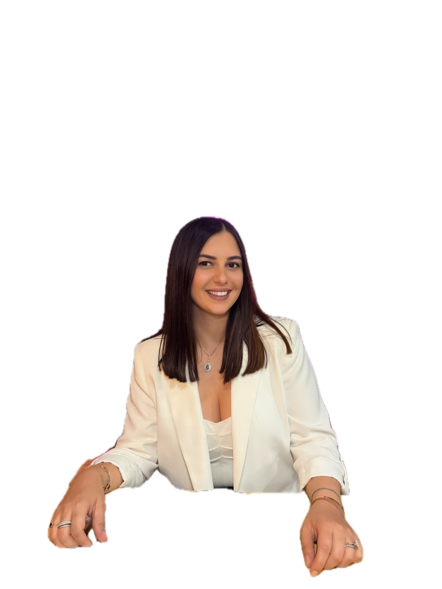

Cognitive & Computer Scientist
A decade at the intersection of human data, AI systems, and how people actually think, feel, and make decisions. I work at the layer where cognitive theory becomes computational implementation.

About
That's the core question I've spent the last decade chasing — across very different contexts, but always at the layer between cognitive theory and computational implementation.
My PhD focused on emotion recognition in VR using EEG, fMRI, and eye-tracking. Since then I've applied that foundation across very different contexts: ovulation prediction from physiological signals, emotion recognition from GSR and speech, automated user journeys from behavioural profiling, and UX experiments on VR training across 10 countries.
What connects all of it is the same question: what does this human data actually mean, and how should a system interpret and respond to it. Most recently Head of Science & AI at Stardust (women's health, 2024 – March 2026), and currently Founder of Cognitive Intelligence Development — a consultancy focused on the science layer of intelligent systems.
Through CID, I'm currently developing Nar — a women's health app covering 9 health domains across 6 hormonal life stages, with full science specification including data point logic, signal weighting, and personalised content triggers.
Core competencies
Cognitive data interpretation, system translation, and the experimental rigour that connects them.
EEG, fMRI, GSR, eye-tracking, speech, behavioural signals. Fusing physiological inputs into coherent multimodal datasets that systems can actually interpret.
Translating cognitive models into system logic. Defining what the data points mean, how to weight them, and how the system should adapt and respond to inferred user state.
Lab and field studies with human subjects. Designing the experiments, leading cross-functional research teams, running workshops, and turning findings into publishable work.
Research & professional experience
Owning the cognitive and physiological foundation for ovulation prediction and adaptive content delivery.
Consultancy focused on the science layer of intelligent systems: defining what human-generated data means and how systems should interpret and respond to it.
Advanced Tech & Human Engagement Scientist, Neuroscape/Debut (Canada, 2020–Present) · UX Manager, Checlabs (LA, 2021) · Advisor Cognitive Science, Jeeny.AI (Berlin, 2021) · Lead Scientist, Humanaut (TN, 2020) · Lead Scientist, Noumena Global (FL, 2020).
Builds
Beyond research, I prototype and ship — turning the science layer into actual products.
Women's health app covering 9 health domains across 6 hormonal life stages. Full science specification including data point logic, signal weighting, and personalised content triggers.
Sales conversation intelligence powered by cognitive science. Analyzes call transcripts via Claude LLM pipelines with cognitive-science frameworks. 0–100 scoring, deal risk, win probability.
AI-powered goal achievement. Conversational creation flow, safety validation, prompt-injection detection, structured output parsing. SwiftUI + FastAPI backend.
Baby weaning & nutrition intelligence. Tracks food introduction with reaction scoring and allergen flagging. AI-powered insights and seasonal produce suggestions.
Select research papers
Five papers on ResearchGate from PhD and earlier research — perception, cognition, AI, and immersive technology.
EEG-based study on information retention across stereoscopic formats.
Analysis of consciousness, cognition, and artificial intelligence.
Perceptual realism and dimensions of reality in immersive environments.
Interaction analysis of augmented reality in museum engagement.
Comparative philosophical analysis (Plato and Kant) on perception and cognition.
Education
Methods & tools
EEG, fMRI, eye-tracking, galvanic skin response (GSR), non-invasive brain stimulation.
Human-subject experiment design (lab and field), A/B testing, usability testing, survey design, workshop facilitation.
BigQuery (SQL), SPSS, MATLAB, Google Analytics, Python and R for analysis.
Figma, Miro, Axure, InVision, Adobe Creative Suite.
Claude Code, Anthropic API, React Native / Expo, SwiftUI, Supabase.
FastAPI, PostgreSQL, Redis, Docker, Firebase, real-time pipelines (WebSocket / SSE).
Contact
Open for research collaborations, AI safety reviews, system-science consultancy, or just a thoughtful conversation about what your data actually means.